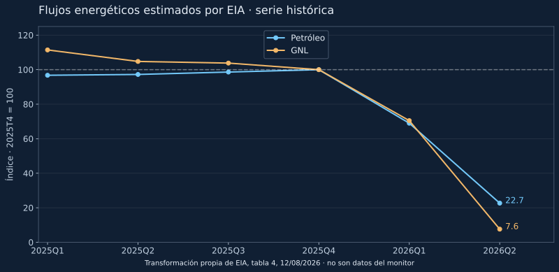

Un anuncio político, la existencia de una travesía y el volumen de energía transportado responden a preguntas diferentes. Una matriz de comprobación y una comparación histórica ayudan a evitar un diagnóstico engañoso.
La palabra «cierre» parece describir un interruptor, pero una ruta comercial puede degradarse sin quedar bloqueada para todo buque. Un tránsito documentado refuta una afirmación absoluta de imposibilidad física de paso en ese momento y para ese trayecto. No demuestra que todas las banderas, cargas o compañías puedan operar de forma previsible.
Tres afirmaciones que exigen pruebas distintas
| Afirmación | Prueba necesaria | Lo que no basta |
|---|---|---|
| Cierre declarado | Declaración original, emisor, fecha y alcance | Un titular que no permita comprobar la declaración |
| Paso físico observado | Travesía completa, fecha y fuente marítima contrastable | Un punto AIS o un buque fondeado |
| Operación normal o muy restringida | Serie comparable de flujo, acceso, demoras y riesgo | Una sola travesía o una caída de precios |
Esta matriz organiza una investigación; no sustituye avisos de navegación ni decide aquí la clasificación del monitor. Las declaraciones se atribuyen a su emisor. La ausencia de una noticia de tránsito no se convierte en una prueba de bloqueo.
Un contraste energético con fecha y unidad
El suplemento de seguridad energética de la EIA, publicado el 12 de agosto de 2026, estima para Ormuz 21,6 millones de barriles diarios de petróleo en el cuarto trimestre de 2025 y 4,9 en el segundo de 2026. Para GNL presenta 10,5 y 0,8 miles de millones de pies cúbicos diarios, respectivamente. Son estimaciones trimestrales publicadas por la EIA, no mediciones propias ni una lectura de hoy.

Nuestro cálculo entre esos dos trimestres es (4,9 ÷ 21,6 − 1) × 100 = −77,3% para petróleo y (0,8 ÷ 10,5 − 1) × 100 = −92,4% para GNL. El índice permite mostrar la magnitud relativa de dos series con unidades diferentes. No crea una medida conjunta de energía perdida ni cuantifica el efecto sobre el precio.
Las medias trimestrales pueden ocultar días con situaciones distintas. Además, una cifra estimada superior a cero no identifica qué buques pasaron ni demuestra condiciones normales. La tabla tampoco atribuye por sí sola el descenso a una causa concreta.
Qué añade la comparación al diagnóstico
La lectura útil conserva dos resultados a la vez: puede haber paso y una reducción comercial muy importante. Si solo se publica «abierto», el lector puede entender normalidad. Si solo se publica «cerrado», puede entender ausencia total de travesías. Por eso deben acompañarse la etiqueta con evidencia fechada, ámbito y limitaciones.
Los registros históricos V7 examinados en el primer borrador no aportan porcentajes numéricos de tráfico. No se rellenan con estas estimaciones trimestrales de la EIA: corresponden a otra frecuencia y no validan automáticamente cada clasificación del sistema.
Uso económico prudente
Para una empresa importa separar exposición física, coste de sustitución y duración. Una carga puede retrasarse sin perderse; una ruta técnicamente disponible puede resultar difícil de asegurar. Esas posibilidades justifican vigilar inventarios, contratos y avisos, pero no permiten convertir el descenso histórico en una previsión de combustible o inflación española.
La aportación propia consiste en la matriz, los índices calculados y la conexión explícita entre sus límites. El CSV de valores usados permite repetir cada división. Fuente: EIA, Global Energy Security Data, tabla 4, 12/08/2026. Se utiliza la tabla publicada; no se redistribuyen posiciones de Vortexa ni fotografías de terceros.